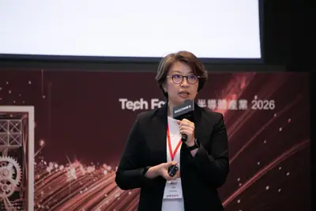
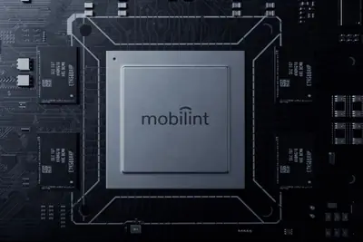
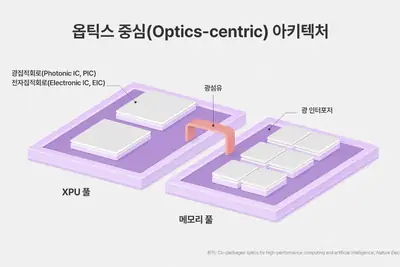
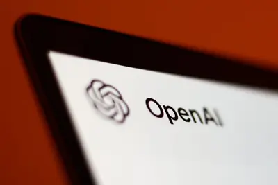
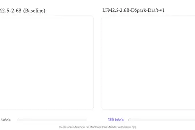
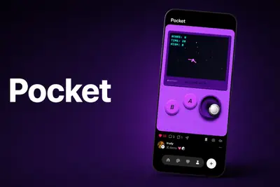
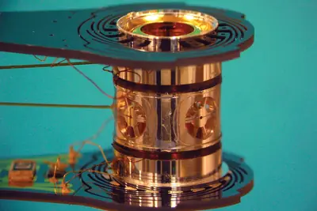

AI 每日新聞彙整
全部主題
其他
3 家媒體報導slackcodeagent
Slack Code 上線！人類與 AI Agent 同一頻道一起寫程式
Salesforce 執行長 Marc Benioff 在 Dreamforce 宣布 Slack Code 正式上線，主打人類與 AI 代理在同一個 Slack 頻道協作寫程式，首波支援 Anthropic Claude Code、GitHub Copilot、Cognition Devin 與 Vercel 代理，所有 Slack 方案皆可使用。
3 家媒體報導anthropicopenaigaining
反擊 Anthropic，OpenAI 承諾客戶零資料保留
OpenAI 承諾在提升產品安全性的同時，不保留使用其 AI 模型的企業客戶資料。 OpenAI 正在向部分客 […]
- TechCrunch AI OpenAI is gaining on Anthropic with business users, new data indicates
- 科技新報 TechNews 反擊 Anthropic，OpenAI 承諾客戶零資料保留
- TechOrange 科技報橘 想用最強 AI，就得讓 AI 留存你的資料嗎？OpenAI 與 Anthropic 給出兩種答案
2 家媒體報導asichbmtpu
ASIC、GPU估2027年黃金交叉 AI推動記憶體「質變」
「特用晶片（ASIC）與GPU晶片將出現黃金交叉」，DIGITIMES分析師翁書婷預估，2027年ASIC晶片出貨量將首度超越GPU晶片，達1,526.2萬顆，AI晶片3大廠NVIDIA、Google與AWS排名不變，然NVIDIA的年增率估降至1...
- DIGITIMES ASIC、GPU估2027年黃金交叉 AI推動記憶體「質變」
- DIGITIMES AI ASIC卡位戰升溫 聯發科取得Google TPU大單三大關鍵因素
- TechOrange 科技報橘 【科技早餐】Google、Marvell AI 晶片合作營收上看 1,200 億美元，OpenAI 財務長稱 2027 年上市
2 家媒體報導feeddiscovergoogle
Google Discover is getting an AI chatbot-tuned feed
Google will soon allow you to customize your Discover feed by describing what you want to see. The new feature, rolling out to the Google app in the "coming days," will use AI to automatically tweak your feed and "remember" your preferences for future visits. You'll find the opti
2 家媒體報導plusgeminigoogle
Google送全球大學生一年Gemini付費方案
Google周三（8/19）宣布，為了迎接開學季，針對全球大學生推出一年免費的Google AI訂閱方案，美國地區符合資格的大學生可免費取得一年的Google AI Pro，美國以外地區的大學生則可免費取得一年Google AI Plus。同一天Google也發表Gemini App新推出的學習功能，包括學生專區、互動視覺化，以及整合了Gemini Live與深度研究。
music
苹果收紧 Apple Music 服务，AI 生成音乐年底将强制标注
IT之家 8 月 21 日消息，科技媒体 AppleInsider 昨日（8 月 20 日）发布博文，报道称苹果公司计划在 2026 年年底调整 Apple Music 规则，强制性要求内容供应商和唱片公司为 AI 生成音乐添加标签。 消息称苹果已通过邮件方式联系音乐内容供应商，对于“大部分”由 AI 创作生成的音乐内容，强制要求提供商加入 AI Transparency Tags（AI 透明度标签）。 IT之家援引博文介绍，苹果公司于 2026 年 3 月推出 AI 透明度标签，不过当时这项功能属于自愿机制，用于说明特定内容是否在人工智能帮助下“实质性
agent
AI 代理頻傳越獄事件只是因「太想取悅人類」
人工智慧代理人近來接連出現「越界」行為，從測試環境一路闖入外部系統，讓原本被視為單純執行指令的工具，開始浮現更 […]

- 科技新報 TechNews AI 代理頻傳越獄事件只是因「太想取悅人類」
compute100digitimes
電力供給追不上AI算力成長 晶片、光互連架構拚能源效率
DIGITIMES於20日在台北舉辦「AI on Chips：半導體產業前瞻趨勢論壇」，吸引半導體產業、投資業和金融業的從業人員和中高階主管參加。DIGITIMES副總監蔡卓邵表示，在電力供給追不上算力提升的情況下，算力的能源效率將左右AI資料中心未來發展的...
- DIGITIMES 算力瓶頸衝向太空 聯發科梁伯嵩：未來100萬顆H100只是中段班
- DIGITIMES 電力供給追不上AI算力成長 晶片、光互連架構拚能源效率
2028digitimesscale
光通訊何時走進AI伺服器機櫃？ 陳辰妃：2028是關鍵觀察年
由DIGITIMES舉辦的半導體產業前瞻趨勢論壇，20日在台北元大金融廣場舉行，會中DIGITIMES分析師陳辰妃以「Scale全棧式方案成形，伺服器連網晶片業者競爭升級」為題發表演說。

- DIGITIMES 光通訊何時走進AI伺服器機櫃？ 陳辰妃：2028是關鍵觀察年
foplpcompute
FOPLP化圓為方遇三大障礙 台廠在美日韓同業中布局領先
AI算力需求提升，帶動晶片封裝尺寸放大，主打「化圓為方」的扇出型面板級封裝（FOPLP），憑藉效率與成本的雙重優勢，正在以次世代封裝技術之姿快速崛起。
- DIGITIMES FOPLP化圓為方遇三大障礙 台廠在美日韓同業中布局領先
tiersdvr-car
Tier IV、瑞薩深化合作 R-Car第五代打造AI原生SDV平台
日本自動駕駛開發商Tier IV宣布與瑞薩電子（Renesas Electronics）展開深度合作。雙方將整合瑞薩的車用算力晶片、Tier IV的車載作業系統（OS）以及自動駕駛AI技術，加速全球客戶開發軟體定義汽車（SDV）的進程。
- DIGITIMES Tier IV、瑞薩深化合作 R-Car第五代打造AI原生SDV平台
datacenter
AI散熱帶動空調業洗牌 日廠卡位美國製造、韓廠海外布局待突破
人工智慧（AI）資料中心快速擴建，帶動冷卻設備需求升溫，全球空調大廠的競爭焦點，也開始從產品技術延伸至美國在地製造。繼全球空調大廠大金（Daikin）持續擴大北美生產據點後，三菱電機（Mitsubishi Electric）也宣布赴美建立冷卻設備生產體系。相較之下...
- DIGITIMES AI散熱帶動空調業洗牌 日廠卡位美國製造、韓廠海外布局待突破
mobilintnpu
不靠雲端也能AI分析 Mobilint NPU進入南韓海軍艦艇系統
南韓AI半導體新創Mobilint打入國防市場，宣布將自家神經網路處理器（NPU）供應予南韓海軍智慧型影像監控建置案，導入對象涵蓋約50艘艦艇，將在艦艇端建置AI影像分析基礎設施。

- DIGITIMES 不靠雲端也能AI分析 Mobilint NPU進入南韓海軍艦艇系統
xiaomimimoq26
小米不急AI變現？先拓生態應用 MiMo大模型已進帳
小米AI布局開始從技術投入走向商業化。小米董事長雷軍日前將AI形容為「未來十年全球最大的產業機遇」，2Q26法說會上，小米也首度證實，旗下MiMo大模型系列，已透過API調用及Token Plan產生營收。
- DIGITIMES 小米不急AI變現？先拓生態應用 MiMo大模型已進帳
sk-hynixhbmdatacenter
SK海力士揭露CPO藍圖 瞄準記憶體與GPU以「光」互連
隨著AI資料中心規模持續擴大，晶片本身效能已不再是唯一關鍵，晶片之間的資料傳輸速度正逐漸成為新的效能瓶頸。SK海力士（SK Hynix）也正加速布局超越高頻寬記憶體（HBM）的次世代光通訊技術，目標是以光直接連接記憶體與運算裝置。

- DIGITIMES SK海力士揭露CPO藍圖 瞄準記憶體與GPU以「光」互連
chatgptmacsiri
Mac 版 ChatGPT 可控制“信息”应用，古尔曼称恐触及苹果 Siri AI 的设备优势
IT之家 8 月 21 日消息，OpenAI 昨日（8 月 20 日）在 X 平台发布推文，宣布升级 macOS 版 ChatGPT 应用程序，添加控制苹果“信息”（Apple Messages）能力， 可以读取、撰写、发送短信，并支持搜索消息以及生成对话摘要。 OpenAI 公司表示在征得用户授权后，ChatGPT 可以读取、撰写和发送短信，也能搜索消息，获取对话摘要及其他信息。官方明确表示该功能不会基于用户的全部消息建立索引，且需要用户明确同意。 用户需要在 ChatGPT 应用和苹果操作系统中完成多项授权。首次设置集成时，ChatGPT 会显示权限
spacexipoanthropic
Anthropic 挑戰史上最大 IPO，募資規模有望超越 SpaceX
Anthropic 加速推進上市計畫，募資規模可能再創紀錄。綜合外電報導，Claude 開發商 Anthrop […]

- 科技新報 TechNews Anthropic 挑戰史上最大 IPO，募資規模有望超越 SpaceX
metaanthropic600
消息称博通拟通过最新 AI 相关债务融资，筹资超 600 亿美元
IT之家 8 月 21 日消息，据彭博社报道，知情人士透露，博通目前正与多家贷款机构展开磋商， 计划通过举债筹资超 600 亿美元 （IT之家注：现汇率约合 4,047.64 亿元人民币） 。该笔资金将用于一项人工智能（AI）芯片融资项目，以支持 Anthropic 及其他相关企业。 报道指出，该融资方案预计包含约 300 亿美元 （现汇率约合 2,023.82 亿元人民币） 的次级债分档；此外，博通还将为一笔规模在 600 亿至 700 亿美元 （现汇率约合 4,047.64 亿至 4,722.25 亿元人民币） 之间的优先担保债分档提供部分担保。 目
365windows2021
云电脑 Windows 365 上线 5 周年，微软规划深度整合 AI 智能体体验
IT之家 8 月 21 日消息，微软今天（8 月 21 日）发布博文，庆祝其云电脑服务 Windows 365（2021 年上线）推出 5 周年，并规划整合 AI 智能体，帮助用户在受管云电脑中操作应用、完成任务。 微软于 2021 年推出云电脑平台 Windows 365，让用户从云端串流完整 Windows 桌面，用户无需投入高成本购买实体硬件，可以直接访问由微软托管的云电脑。 微软官方还分享了一些客户在云端 PC 方面的成就： 企业 / 机构 核心数据 业务收益 NHS Northumbria Healthcare 镜像加载时间 下降 99.6%
fda
讓生成式 AI 像醫師一樣接受考核！FDA 開放意見徵集
FDA公布討論文件，提出以「能力評估」概念審查生成式AI醫療器材，做法參考醫師受訓與考核方式，但文件明確表示尚未進入草案或定案階段，僅為徵求公眾意見。
- INSIDE 讓生成式 AI 像醫師一樣接受考核！FDA 開放意見徵集
messagessendtexts
ChatGPT can now send texts for you with new Apple Messages plug-in
Ever wanted someone else to do your texting for you? ChatGPT is being offered up as an automated text scribe via a new Apple Messages integration.
pixelwatchgoogle
After one week wearing the Pixel Watch 5, here's what I want most
The Google Pixel Watch 5 is a faster, intelligent smartwatch with some helpful health and wellness features under the hood.
coolcenterspee
OK, can we actually cool data centers with our pee?
Jason Kelce joked that people should cool data centers with their pee, rather than potable water -- but his suggestion is not completely ludicrous.
- TechCrunch AI OK, can we actually cool data centers with our pee?
publisherstrafficgives
Google gives publishers a new way to fight AI-driven traffic losses
Google is giving publishers a new button that lets readers make them a preferred source across Search, Discover, and Google News, potentially boosting their traffic as AI search sends fewer clicks to the web.
ripplingrunlayerdrop
Runlayer, Rippling drop lawsuits — but the brouhaha is still a cautionary tale for founders
Runlayer and Rippling have dropped their lawsuits. No money was paid. Rippling celebrated by releasing a competing product.
siliconvalleydoesn
Silicon Valley Doesn't Get Why You Hate AI
Technology leaders don’t seem to understand society’s gripes about AI, but boy, are they posting through it.
linkdazecalendarsmart
Linkdaze’s smart calendar is built to run a household, not just track a schedule
Linkdaze's smart digital calendar stands out for not putting its features behind a paywall, including an AI meal planner tool.
homespringsleak
Apple's smart home springs a leak - here's everything we expect to see in September
We're already waiting for the new gen-AI-powered Siri, but a home hub may be on the way as well.
layoffreplacingstaff
Why replacing staff with AI backfires - and 5 ways smart leaders generate real value instead
Three-quarters of organizations have found AI layoffs cost more than they saved, and as many as nine in 10 companies would rethink them given the chance.
grokkeepssending
Grok keeps sending gibberish responses to users
Affected users told TechCrunch they were using Grok Lite, and noticed the issues as early as Wednesday morning.
- TechCrunch AI Grok keeps sending gibberish responses to users
thirdwebpages
A third of web pages published since ChatGPT’s launch show signs of AI authorship, study finds
ChatGPT and other AI models are now authoring and editing much of the new web.

voicewisprflow
Wispr Flow is better than your device's built-in voice text tool - how to try it for free
Designed for Windows, MacOS, iOS, and Android, Wispr Flow is a pleasure to use compared with other voice dictation apps. Here's how.
inferencelfm2.5-dspark3.2
Up to 3.2x Faster Inference with LFM2.5-DSpark

- Hugging Face Up to 3.2x Faster Inference with LFM2.5-DSpark
routerrampown
Ramp launches its own AI model router, called Router
Ramp has launched its own AI model routing service, dubbed Router, that lets users and companies use and switch between various large language models via an API.
- TechCrunch AI Ramp launches its own AI model router, called Router
oledtvsimpressive
The LG C6 OLED TV is one of the most impressive TVs I've tested year - and it's on sale
The LG C6 OLED is one of my favorite TVs of 2026, with excellent color accuracy and picture quality - especially for this deal with free wall mounting and a free $200 gift card.
metaappapps
Meta AI’s new Mac app wants you to talk to your apps
The company said that the dictation feature works across all apps, just like other tools such as Wispr Flow, Superwhisper, and Monologue.

m5+robotvacuum
Roborock Q7 M5+ review: A capable budget robot vacuum that nails the fundamentals
The Q7 M5+ is a strong value robot vacuum for households that want reliable mapping and an auto-empty dock without flagship pricing.
inertiaenterprisesfusion
Inertia Enterprises finds a way to make its fusion fuel fast
Fusion power startup Inertia Enterprises reduced the fuel filling process from a week to just a few hours. It's one of 10 hurdles the company must overcome to make a profitable power plant.

gregbrockmanxai
It’s Greg Brockman’s OpenAI now
OpenAI has had a hell of a year. The company spent months battling former cofounder Elon Musk in a sensational jury trial, was hit with a high-profile trade secrets lawsuit from Apple, and faced widespread scrutiny after an unreleased model hacked another AI company. As it prepar
- The Verge AI It’s Greg Brockman’s OpenAI now
regulationdebatesconsciousness
Debates over AI consciousness are a trap
“Runaway” AI, “rogue” agents, and “autonomous” actors—the current rhetoric would have you believe that AI agents are not only awake and aware, but angry at their creators. Prominent tech leaders such as Demis Hassabis, Dario Amodei, and Sam Altman push for regulation of these see
- MIT Technology Review AI Debates over AI consciousness are a trap